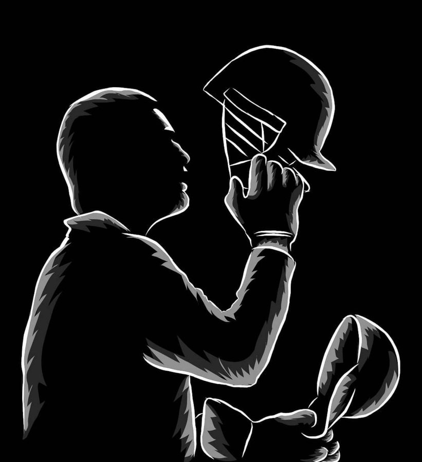

Mahindra Singh Dhoni
Indian Team Cricketer

Mahendra Singh Dhoni (/məˈheɪndrə ˈsɪŋ dhæˈnɪ/ (listen); born 7 July 1981) is an Indian
professional cricketer. He was captain of the Indian national team in limited-overs formats from 2007 to
2017 and in Test cricket from 2008 to 2014. Dhoni is widely considered one of the greatest cricket captains,
wicket-keeper-batsman and finishers in the history of cricket.[a] He plays as a right-handed
wicket-keeper-batsman and is known for his calm captaincy and his ability to finish matches in tight
situations. He is also the current captain of Chennai Super Kings in the Indian Premier League.
Born in Ranchi, Bihar (now in Jharkhand),[8][9] His exceptional wicketkeeping skills allowed him to become
the regular wicketkeeper at the Commando Cricket Club (1995–1998), he was picked for the 1997/98 season
Vinoo Mankad Trophy Under-16 Championship, where he performed well.[10] From 2001 to 2003, He worked as a
Travelling Ticket Examiner at Kharagpur railway station under South Eastern Railway in Midnapore, in West
Bengal.[11][12] In Indian domestic cricket he played for Bihar and then for Jharkhand Cricket team. Dhoni's
performance in the 2002–03 season included three half-centuries in the Ranji Trophy and a couple of
half-centuries in the Deodhar Trophy, as he started gaining recognition for his lower-order contribution as
well as hard-hitting batting style
He is the captain of Chennai Super Kings (CSK) in the Indian Premier League, leading them to the final on 10
occasions and winning in the 2010, 2011, 2018, 2021 and 2023 editions of the league, as well as winning the
Champions League T20 two times, in 2010 and 2014. He is the 7th cricketer have scored more than 5,000 runs
in the IPL, as well as being the first wicket-keeper to do so.
Dhoni received India's highest sports honour, the Major Dhyanchand Khel Ratna Award in 2008 for his
outstanding achievements and the Government of India honoured him India's fourth civilian award Padma Shri
in 2009 and third civilian award Padma Bhushan in 2018. He is the only cricket captain in the world to win
all three of the Cricket World Cup, ICC Men's T20 World Cup and ICC Champions Trophy. Dhoni holds an
honorary rank of Lieutenant Colonel in the Parachute Regiment of the Indian Territorial Army,[19] it was
presented to him by the Indian Army in 2011 for his service to the nation as a cricketer.[20] Dhoni is
considered one of the most popular cricketers in the world.[21] He is a leading brand endorser celebrity in
India. The 2016 film, M.S. Dhoni: The Untold Story was made as a biopic on his life